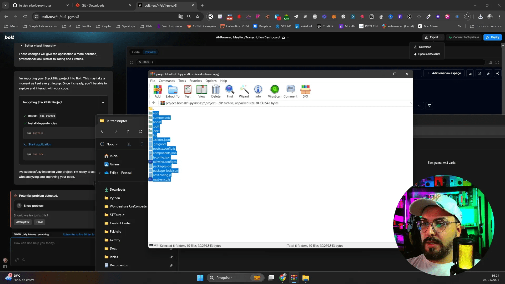
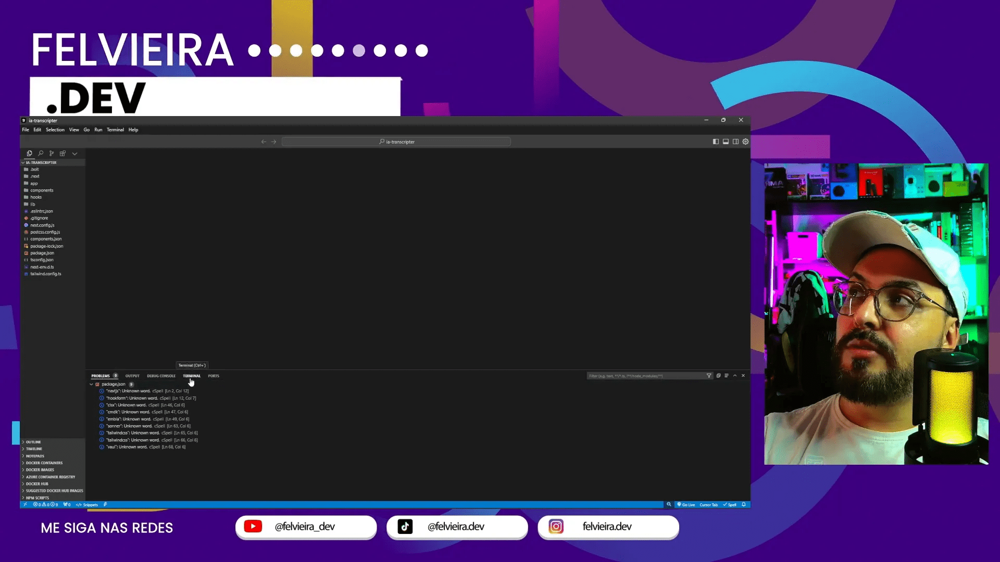
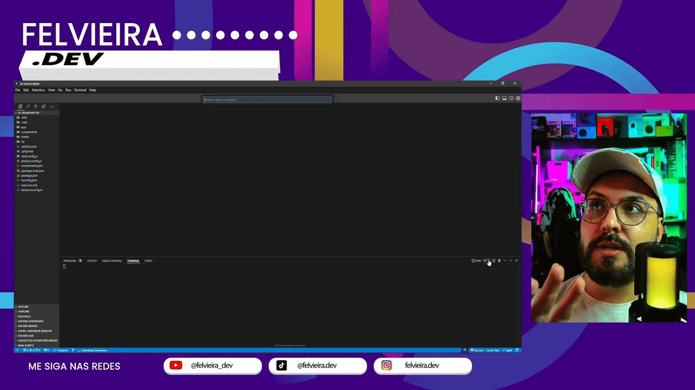
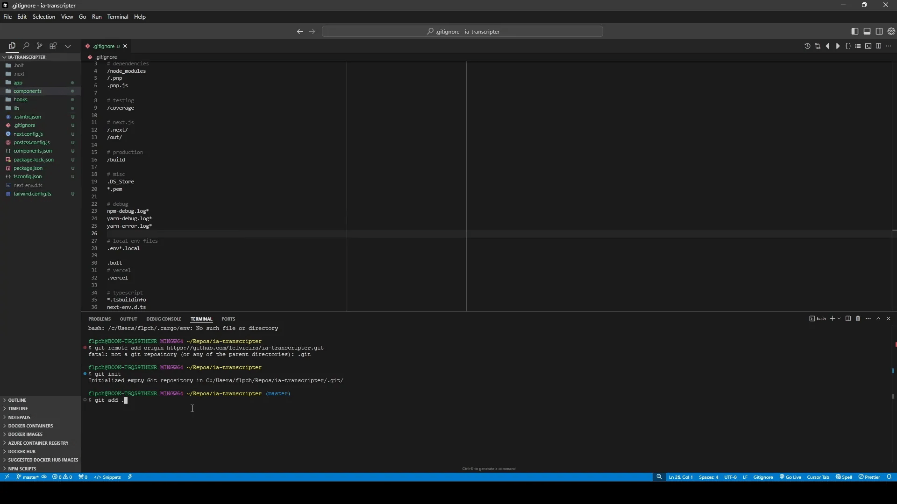
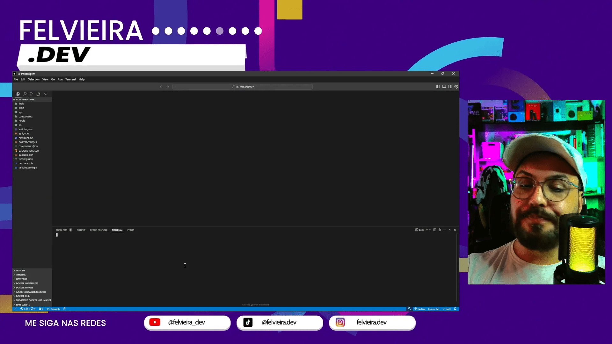
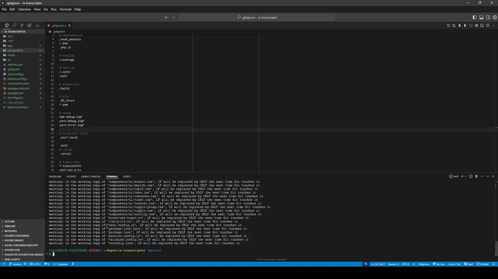
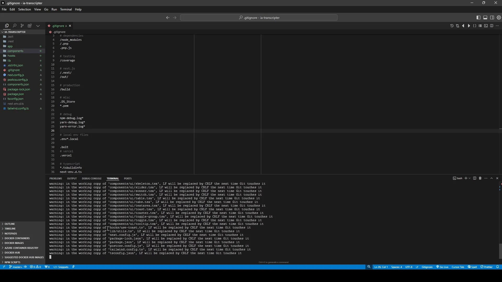

Neste guia, exploraremos como a inteligência artificial pode otimizar o desenvolvimento frontend, utilizando ferramentas como Git e GitHub. Aprenda a organizar seu código e a aplicar práticas eficientes de design AI em seus projetos.
Índice
- Passo 1: Por que usar Git com Ferramentas No-Code/Low-Code? 🚀
- Passo 2: Instalação do Git 💻
- Passo 3: Voltando ao Bolt: Preparando o Projeto ⚙️
- Passo 4: Download do Projeto do Bolt 📥
- Passo 5: Abrindo o Projeto no Cursor/Windsurf 🖥️
- Passo 6: Acessando o Terminal ⌨️
- Passo 7: Criando um Repositório no GitHub 🌐
- Passo 8: Conectando o Projeto Local ao GitHub 🔗
- Passo 9: Iniciando o Git no Projeto 🆕
- Passo 10: Adicionando Arquivos ao Git ➕
- Passo 11: Usando o .gitignore para Excluir Arquivos 🚫
- Passo 12: Criando um Commit ✅
- Passo 13: Enviando o Projeto para o GitHub 📤
- Passo 14: Visualizando o Repositório no GitHub 🌍
- Passo 15: Fazendo Alterações e Novo Commit 🔄
- Passo 16: Verificando o Status do Git 📊
- Passo 17: Enviando as Alterações para o GitHub (git push) 🚀
- Passo 18: Boas Práticas com Git e IDEs 👍
- Passo 19: Voltando com o Código para o Bolt (Local) 🔄
- Passo 20: Fluxo de Trabalho em Equipe com Git 🤝
- Passo 21: Conclusão e Próximos Passos 🌟
- FAQ: Perguntas Frequentes ❓
Passo 1: Por que usar Git com Ferramentas No-Code/Low-Code? 🚀
Utilizar Git em projetos de ferramentas No-Code/Low-Code traz vantagens significativas. Primeiramente, ele proporciona um controle de versão robusto, permitindo que desenvolvedores e designers rastreiem alterações ao longo do tempo.
Além disso, a colaboração se torna mais fluida. Com Git, múltiplos membros da equipe podem trabalhar simultaneamente sem o risco de sobrescrever o trabalho uns dos outros. Isso é essencial no contexto de inteligencia artificial desenvolvimento frontend design ai, onde as equipes frequentemente integram várias partes de um projeto.
- Rastreabilidade: Cada mudança é documentada, facilitando a identificação de problemas.
- Colaboração: Permite que diferentes membros da equipe contribuam de forma eficaz.
- Backup: O repositório atua como um backup seguro do seu trabalho.
Passo 2: Instalação do Git 💻
A instalação do Git é um processo simples e direto. Para começar, você precisa baixar o instalador adequado para o seu sistema operacional.
Após o download, siga as instruções de instalação. É importante garantir que o Git esteja corretamente configurado em seu ambiente de desenvolvimento. Você pode verificar a instalação abrindo um terminal e digitando git --version.
Passo 3: Voltando ao Bolt: Preparando o Projeto ⚙️
Antes de iniciar o trabalho, é necessário preparar o projeto no Bolt. Isso envolve criar uma nova pasta onde seu projeto será armazenado e configurar os arquivos iniciais.
Certifique-se de que todos os componentes necessários estejam prontos para serem integrados. Uma boa estrutura de pastas facilita o gerenciamento do projeto e a integração com o Git.
Passo 4: Download do Projeto do Bolt 📥
Com o projeto configurado, o próximo passo é fazer o download do projeto do Bolt. Isso pode ser feito diretamente pelo painel de controle da ferramenta.
Uma vez concluído o download, você terá acesso a todos os arquivos necessários para iniciar o desenvolvimento. Verifique se todos os arquivos foram baixados corretamente antes de prosseguir.
Passo 5: Abrindo o Projeto no Cursor/Windsurf 🖥️
Após o download, abra o projeto no Cursor ou Windsurf. Essas ferramentas oferecem um ambiente de desenvolvimento intuitivo e fácil de usar.
Certifique-se de que todas as dependências estejam instaladas e que o ambiente esteja configurado corretamente para evitar problemas durante o desenvolvimento.

Passo 6: Acessando o Terminal ⌨️
O terminal é uma ferramenta essencial para interagir com o Git. Abra o terminal integrado na sua ferramenta de desenvolvimento.
Com o terminal aberto, você pode executar comandos Git para gerenciar seu repositório. Familiarize-se com comandos básicos como git init e git status.

Passo 7: Criando um Repositório no GitHub 🌐
Para compartilhar seu projeto, crie um repositório no GitHub. Acesse sua conta no GitHub e clique em “New repository”.
Preencha os detalhes do repositório, como nome e descrição. Escolha se deseja que o repositório seja público ou privado e clique em “Create repository”.

Passo 8: Conectando o Projeto Local ao GitHub 🔗
Com o repositório criado, você precisa conectar seu projeto local ao GitHub. No terminal, utilize o comando git remote add origin [URL do repositório].
Depois, faça seu primeiro commit e envie as alterações para o GitHub usando git push -u origin master. Isso garante que seu projeto esteja disponível online.

Passo 9: Iniciando o Git no Projeto 🆕
Para começar a utilizar o Git em seu projeto, o primeiro passo é inicializar o repositório. No terminal, navegue até a pasta do seu projeto e execute o comando git init.
Esse comando cria um novo repositório Git vazio. É o ponto de partida para começar a rastrear as mudanças no seu código. Certifique-se de que você está no diretório correto antes de executar o comando.

Passo 10: Adicionando Arquivos ao Git ➕
Após inicializar o repositório, o próximo passo é adicionar os arquivos ao Git. Use o comando git add . para adicionar todos os arquivos na pasta atual ao índice do Git.
Isso prepara os arquivos para o próximo commit. Você pode também adicionar arquivos específicos, se preferir, utilizando git add [nome do arquivo].

Passo 11: Usando o .gitignore para Excluir Arquivos 🚫
O arquivo .gitignore é essencial para evitar que arquivos desnecessários sejam rastreados pelo Git. Crie um arquivo chamado .gitignore na raiz do seu projeto e liste os arquivos ou pastas que você deseja ignorar.
Isso pode incluir arquivos de configuração, dependências de bibliotecas ou qualquer outro arquivo que não precise ser versionado. Um .gitignore bem configurado mantém seu repositório limpo e organizado.

Passo 12: Criando um Commit ✅
Após adicionar os arquivos, é hora de criar um commit. Execute o comando git commit -m "Mensagem do commit". A mensagem deve descrever as alterações realizadas.
Os commits são fundamentais para o controle de versão, pois permitem que você volte a versões anteriores do seu projeto se necessário. Lembre-se de fazer commits frequentes para melhor rastreabilidade.

Passo 13: Enviando o Projeto para o GitHub 📤
Com o commit criado, você pode enviar seu projeto para o GitHub. Utilize o comando git push origin master para enviar suas alterações para o repositório remoto.
Se for a primeira vez que você está enviando alterações, pode ser necessário usar git push -u origin master para estabelecer a relação entre seu repositório local e o remoto.

Passo 14: Visualizando o Repositório no GitHub 🌍
Depois de enviar seu projeto, acesse o GitHub e visualize seu repositório. Você verá todos os arquivos e a estrutura de diretórios que você criou.
O GitHub também fornece um histórico de commits, permitindo que você veja as mudanças feitas ao longo do tempo. Isso é útil para revisão e colaboração em equipe.

Passo 15: Fazendo Alterações e Novo Commit 🔄
Após realizar alterações no seu projeto, não esqueça de adicionar os arquivos modificados novamente com git add .. Em seguida, crie um novo commit com uma mensagem que descreva as mudanças.
Essa prática garante que todas as alterações sejam documentadas e que você possa rastrear o histórico do seu projeto de forma eficaz.

Passo 16: Verificando o Status do Git 📊
Para verificar o status do seu repositório, utilize o comando git status. Esse comando informa quais arquivos foram modificados, quais estão prontos para o commit e quais não estão sendo rastreados.
Manter-se atualizado sobre o status do seu repositório é crucial para um fluxo de trabalho eficiente, especialmente em um ambiente de inteligencia artificial desenvolvimento frontend design ai.

Passo 17: Enviando as Alterações para o GitHub (git push) 🚀
Após realizar as alterações necessárias no seu projeto, é hora de enviá-las para o GitHub. Isso é feito utilizando o comando git push. Este comando atualiza o repositório remoto com as alterações feitas localmente.
Antes de executar o comando, certifique-se de que todos os arquivos modificados foram adicionados ao índice com git add . e que um commit foi realizado. O comando completo geralmente se parece com git push origin master.

Passo 18: Boas Práticas com Git e IDEs 👍
É fundamental adotar boas práticas ao utilizar Git em conjunto com IDEs. Aqui estão algumas dicas para otimizar seu fluxo de trabalho:
- Commits frequentes: Faça commits regulares com mensagens claras para documentar suas alterações.
- Branches: Utilize branches para trabalhar em novas funcionalidades ou correções sem afetar a versão principal do projeto.
- Merge requests: Crie merge requests para revisões de código antes de integrar mudanças ao branch principal.
Essas práticas ajudam a manter o repositório organizado e facilitam a colaboração entre equipes, especialmente em projetos de inteligencia artificial desenvolvimento frontend design ai.
Passo 19: Voltando com o Código para o Bolt (Local) 🔄
Se você precisar reverter alterações ou trazer o código de volta para o estado anterior, é possível utilizar o comando git checkout. Este comando permite que você volte a um commit específico ou a um branch anterior.
Para fazer isso, identifique o hash do commit que deseja restaurar e execute git checkout [hash do commit]. Lembre-se de que isso pode afetar seu estado local, então sempre faça um backup antes de realizar essa operação.

Passo 20: Fluxo de Trabalho em Equipe com Git 🤝
Colaborar em projetos de desenvolvimento requer um fluxo de trabalho bem estruturado. Aqui estão algumas etapas para garantir uma colaboração eficiente:
- Planejamento: Defina claramente as tarefas e responsabilidades de cada membro da equipe.
- Branches: Cada membro deve criar um branch para suas tarefas específicas, evitando conflitos no branch principal.
- Revisões: Realize revisões de código antes de integrar as alterações ao branch principal para garantir a qualidade do código.
Um fluxo de trabalho estruturado não só melhora a eficiência, mas também é essencial para projetos de inteligencia artificial desenvolvimento frontend design ai, onde a colaboração é vital.
Passo 21: Conclusão e Próximos Passos 🌟
Neste guia, abordamos como utilizar Git e GitHub de forma eficaz no desenvolvimento frontend. Aprender a gerenciar seu código e colaborar com a equipe é crucial para o sucesso de qualquer projeto.
Os próximos passos incluem aprofundar-se nas funcionalidades avançadas do Git, como rebase e cherry-pick, bem como explorar como a inteligência artificial pode ainda mais otimizar seu fluxo de trabalho no desenvolvimento frontend.
FAQ: Perguntas Frequentes ❓
1. O que é Git e por que devo usá-lo?
Git é um sistema de controle de versão que permite rastrear alterações em arquivos e colaborar em projetos. É essencial para manter o histórico de alterações e facilitar o trabalho em equipe.
2. Como posso resolver conflitos no Git?
Conflitos ocorrem quando duas ou mais alterações são feitas na mesma linha de um arquivo. Para resolvê-los, você precisa editar o arquivo conflitante, escolher as alterações que deseja manter e, em seguida, fazer um commit.
3. O que é um commit e por que é importante?
Um commit é uma captura do estado atual do seu projeto. É importante porque permite que você volte a versões anteriores e mantenha um histórico claro das alterações realizadas.
4. Qual a diferença entre Git e GitHub?
Git é a ferramenta de controle de versão, enquanto o GitHub é uma plataforma que hospeda repositórios Git na nuvem, facilitando a colaboração e o compartilhamento de código.
Veja mais detalhes no vídeo 🚀 Do Bolt para o GitHub: Controle Seu Código No-Code Low-Code! #Git #GitHub #NoCode.